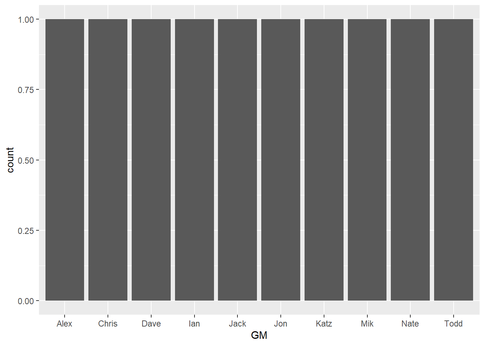

OBJECTIVE: Demonstrate the basics of visualizing data from my fantasy football league using the ggplot2 package from the Tidyverse.
Setup
library(tidyverse)## -- Attaching packages --------------------------------------- tidyverse 1.3.0 --## v ggplot2 3.3.2 v purrr 0.3.4
## v tibble 3.0.4 v dplyr 1.0.2
## v tidyr 1.1.2 v stringr 1.4.0
## v readr 1.4.0 v forcats 0.5.0## -- Conflicts ------------------------------------------ tidyverse_conflicts() --
## x dplyr::filter() masks stats::filter()
## x dplyr::lag() masks stats::lag()Import Data
gm <- c("Alex", "Ashton", "Mik", "Katz", "Dave", "Brett", "Ian", "Jack", "Jon", "Chris", "Todd", "Nate")
# years league has been active
year <- c(2012:2019)
# podium placement in order by year
first <- c("Mik", "Nate", "Nate", "Chris", "Nate", "Nate", "Dave", "Dave")
second <- c("Jon", "Alex", "Ian", "Todd", "Jon", "Chris", "Jon", "Jon")
third <- c("Katz", "Katz", "Jack", "Dave", "Katz", "Katz", "Chris", "Todd")
podium <- tibble(year, first, second, third)# count Top 3 finishes by GMs
podium_count <-
podium %>%
pivot_longer(cols = -year,
values_to = 'GM') %>%
count(name, GM) %>%
pivot_wider(names_from = name, values_from = n, values_fill = list(n = 0))
podium_count## # A tibble: 10 x 4
## GM first second third
## <chr> <int> <int> <int>
## 1 Chris 1 1 1
## 2 Dave 2 0 1
## 3 Mik 1 0 0
## 4 Nate 4 0 0
## 5 Alex 0 1 0
## 6 Ian 0 1 0
## 7 Jon 0 4 0
## 8 Todd 0 1 1
## 9 Jack 0 0 1
## 10 Katz 0 0 4ggplot(podium_count, aes(x = GM)) + geom_bar()
Share this post
Twitter
Google+
Reddit
LinkedIn
StumbleUpon
Email